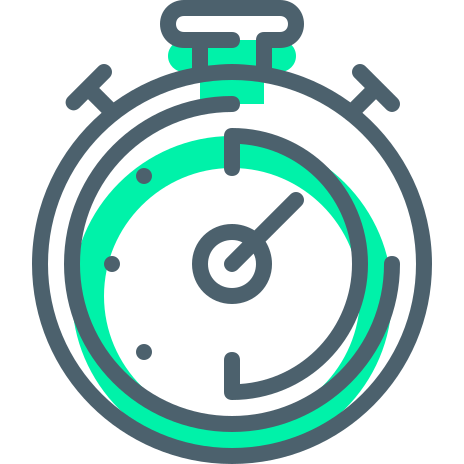

Lili te ofrece sin costo la guía personalizada de un médico de familia que cuidará tu salud y la de tu familia con un enfoque de atención integral.
Este médico de cabecera podrá ayudarte a resolver la mayoría de tus consultas ambulatorias y a orientarte para promover una vida sana y prevenir enfermedades.
Este servicio NO tiene costo para ti, tanto en consultas presenciales como a través de telemedicina.
A través de tu cuenta podrás:
Agendar las consultas con tu médico de cabecera en modo presencial o telemedicina.
Preguntar o solicitar orientación a nuestro equipo de médicos que te darán respuesta por teléfono o mensaje en menos de 20 minutos.
Crear tu ficha clínica, en donde podrás revisar todo tu historial médico en un solo lugar.
Beneficios especiales
Las prestaciones indicadas por tu médico de cabera tienen un 20% de cobertura adicional, después del deducible de tu plan (te explicaremos de eso en la siguiente sección).
Recuerda: siempre podrás consultar a tu médico de cabecera sin costo, ya sea en persona o a través de telemedicina.
Lili es más conveniente porque usa deducible. Mientras más alto sea, más bajo será el valor mensual del plan. ¡Tú eliges!
El deducible es monto de copago acumulado que tienes que pagar en el año, antes de que se activen las coberturas adicionales.
Tu financias tus gastos médicos (después de la cobertura mínima legal) hasta completar el deducible; después, nosotros nos hacemos cargo de hasta el 100%, según donde te atiendas y si fuiste derivado por tu médico de cabecera.
Usa tu Red para mayor cobertura
Elige la Red de Clínicas en la que te quieres atender.
Si te atiendes en esta Red, las hospitalizaciones tienen 80% de cobertura después del deducible, que se transforma en un 100% si te deriva tu médico de cabecera.
En consultas, exámenes y procedimientos ambulatorios, tienes un 70% de cobertura en la Red después del deducible, que será un 90% si te deriva tu médico de cabecera.
Lili, todo más simple y claro.

Lili es simple, todos los trámites se realizan en pocos pasos y usando nuestra plataforma. Nunca tendrás que ir a una sucursal.
Lili es claro, nuestro plan está diseñado para que lo entiendas y sepas como usarlo. Sin letra chica.
Al igual que tú, queremos que estés sano y no gastes de más en lograrlo. Lili es claro, escucha a tu médico de cabecera y usa tu Red cuando la necesites.